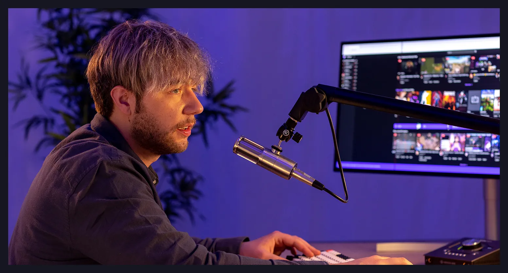

<!--Hrabar Yana-->
<section class="about-us">
  <div>
    <div>
      <h1>About Us</h1>
      <nav>
        <a href="index.html">Home</a> > <a href="about-us.html">About us</a>
      </nav>
    </div>
    <p>
      Learn more about EchoWave Radio, our mission and vision, our employees,
      and our approach to broadcasting.
    </p>
    
    <p>*</p>
    <p>OUR STORY</p>
    <p>
      EchoWave Radio is your favorite wave in New York. Thousands of citizens
      listen to our broadcasts, playlists, and podcasts while they commute,
      work, cook, love, and simply live.
    </p>
    <p>
      At EchoWave, we believe in the extraordinary power of music to transcend
      boundaries, evoke emotions, and create lasting connections. Our journey
      began in New York in 2005, when our owner, Jack Richardson, met other
      music enthusiasts with a shared vision: to redefine the auditory
      experience.
    </p>
    <p>
      Today, EchoWave stands as a beacon of musical diversity, a community
      united by the love for extraordinary sounds. Reflect with us on our
      history, filled with gratitude for each note, each beat, and each listener
      who has been a part of this incredible journey. Here's to the years gone
      by and the countless beats yet to be discovered. Thank you for being part
      of our musical evolution.
    </p>
    <a href="#" class="button">Learn More</a>
  </div>
</section>
<!--Hrabar Yana-->
